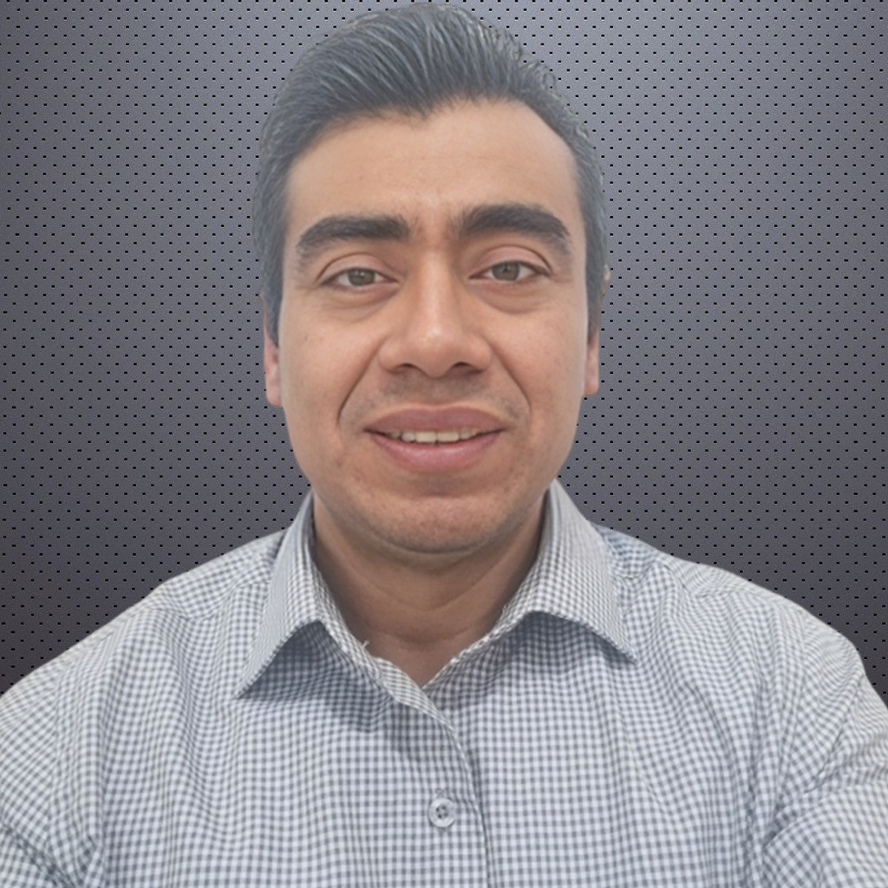

Professional Summary
.NET Developer with over 8 years of experience, specialized in .NET Core, .NET Framework, and ASP.NET Web Forms. Competence in backend system development, RESTful APIs, and handling databases with SQL Server. Background in industries such as finance, pharmaceuticals, oil and gas, and retail. Currently developing skills in Angular, React, and Docker to improve full-stack capabilities. Fluent in B2 English and previously worked in cross-functional teams.
Technical Skills
Programming Languages
Languages I've worked with professionally
C# (8+ years)
Visual Basic .NET
T-SQL
Professional Experience
.NET Backend Developer
Capgemini Engineering
September 2023 - September 2024
Guadalajara, JAL
Responsibilities:
- Developed and maintained backend systems, improving query execution and system performance.
- Designed and maintained stored procedures, views, and tables for efficient database management with the team.
- Debugged and resolved technical issues, enhancing system reliability.
Key Technologies:
C#.NET
SQL Server 2012
RDLC
GitHub
Postman
ASP.WEB API
Sr. Backend Developer
Arte Digital
January 2023 - September 2023
Tijuana, BC
Responsibilities:
- Led API migration for text messaging services, improving performance and security.
- Worked in multicultural teams across LATAM, US, and Middle East regions.
- Enhanced UI components with ASP.NET WebForms, maintained the existing codebase, and resolved application bugs.
Key Technologies:
ASP.NET WebForms
C#
Hibernate ORM
SQL Server 2012
BitBucket
JIRA
ASP.WEB API Restful
Sr. Developer
AXEN IT Consulting
October 2017 - January 2023
Monterrey, NL
Responsibilities:
- Developed new features and supported the existing codebase for the MMS solution, improving system reliability.
- Designed and developed WebAPIs using CQRS for scalable architecture of the project.
- Integrated third-party tools and optimized SQL Server queries with the team.
Key Technologies:
C#.NET
WinForm
WPF
SQL Server 2016
Entity Framework Core 2.2
DevExpress
CQRS
.Net Core 2.0
ASP.WEB API
Web Developer
Punto Zhufu
October 2019 - October 2021
Mexico, CDMX
Responsibilities:
- Led backend development, improving security and performance with Page Model, Entity Framework, and .NET Core.
- Razor Pages were used to create front-end user interfaces.
- Implemented PDF generation and advanced role-based authentication.
Key Technologies:
ASP.NET Core
Razor Pages
SQL Server 2016
Bootstrap
JavaScript
Azure Repos DevOps
.NET Core 2.2
Education
Universidad del Valle de Mexico
Computer Systems Engineering
August 1999 - January 2006
Bachelor's Degree
Contact Me
Contact Information
Feel free to reach out through any of these channels